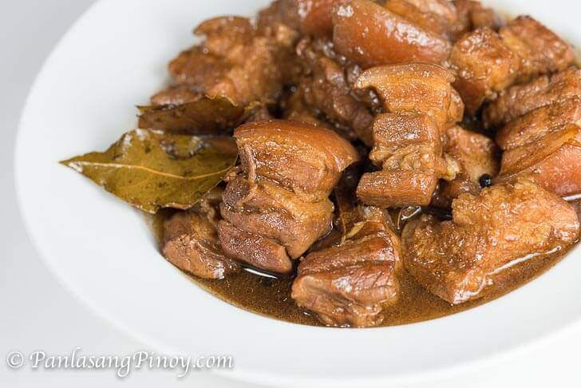

Home
PORK ADOBO

Description
This is a classic Filipino dish that is savory and slightly tangy, perfect for any occasion.
Ingredients
- 2 lbs pork belly, cut into cubes
- 1 cup soy sauce
- 1/2 cup vinegar
- 1/4 cup water
- 5 cloves garlic, minced
- 2 bay leaves
- 1 teaspoon black peppercorns
- 1 tablespoon sugar (optional)
- Salt to taste
Steps
- In a large pot, combine pork, soy sauce, vinegar, water, garlic, bay leaves, and peppercorns.
- Bring to a boil over medium heat, then reduce to low heat and simmer for about 40 minutes or until the pork is tender.
- If desired, add sugar to balance the flavors and adjust salt to taste.
- Serve hot with steamed rice.